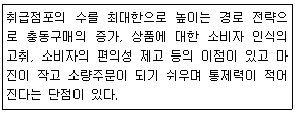
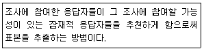
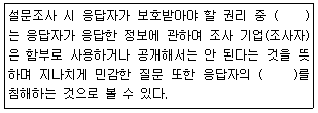
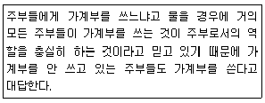
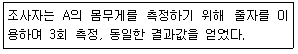
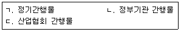
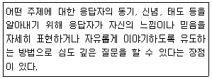
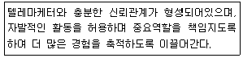
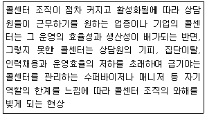
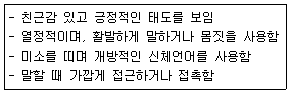

텔레마케팅관리사 (2019-08-04 기출문제)
1과목: 판매관리
1. 데이터베이스 마케팅의 주요 장점이 아닌 것은?
- 단기 이익을 우선으로 한다.
- 신규 사업 진출에 유리하다.
- 기존 고객을 적극 활용할 수 있다.
- 기존고객 중 타깃 고객을 발굴할 수 있다.
(정답률: 83%)

2. 일반적인 소비재의 유통경로를 바르게 나열한 것은?
- 생산자 → 소매상 → 도매상 → 소비자
- 생산자 → 도매상 → 소매상 → 소비자
- 도매상 → 생산자 → 소매상 → 소비자
- 도매상 → 소매상 → 생산자 → 소비자
(정답률: 84%)
3. 가격할인 형태 중 신모델 구입 시 구모델을 반환하면 그만큼 가격을 할인해주는 방법은?
- 공제(allowance)
- 현금할인(cash discount)
- 수량할인(quantity discount)
- 계절할인(seasonal discount)
(정답률: 89%)
4. 아웃바운드 텔레마케팅시 상품을 효과적으로 설명하는 방법으로 옳지 않은 것은?
- 고객의 말을 경청하고 질문을 곁들이면서 설명한다.
- 경쟁 상품과 비교하여 고객이 쉽게 판단할 수 있어야 한다.
- 상품의 장점을 반복해서 설명하여 고객이 납득할 수 있어야 한다.
- 구매한 고객의 상품후기는 주관적인 의견이 개입되어 있으므로 활용하지 않는다.
(정답률: 86%)
5. 고객서비스 지향적 인바운드 텔레마케팅 도입시 점검사항과 가장 거리가 먼 것은?
- 목표 고객의 리스트
- 고객정보의 활용 수준
- 성과분석과 피드백
- 소비자 상담창구 운영 능력
(정답률: 57%)
6. 효과적인 시장세분화를 위한 요건이 아닌 것은?
- 규모(size)
- 이윤성(profitability)
- 측정가능성(measurability)
- 접근가능성(accessibility)
(정답률: 52%)
7. 마케팅촉진(promotion)전략에 대한 설명으로 옳은 것은?
- 제품계열(product line)과 품목(item)으로 구성된다.
- 기업이 제공하는 효용에 대해 소비자가 지불하는 대가인 것이다.
- 기업의 고객과의 의사소통수단인 광고, 홍보, 판매촉진, 그리고 인적판매를 말한다.
- 소비자가 원하는 제품을 원하는 장소와 원하는 시간에 구매할 수 있도록 해주는 것이다.
(정답률: 77%)
8. 포지셔닝(positioning)에 관한 설명으로 옳지 않은 것은?
- 포지셔닝 맵은 크게 제품 위주의 포지셔닝 맵과 소비자의 지각을 통해 작성하는 인지도가 있다.
- 포지셔닝 맵이란 소비자의 마음속에 내재되어 있는 자사제품과 경쟁회사 제품들의 위치를 2차원 또는 3차원의 도면으로 작성한 것이다.
- 포지셔닝이란 기업이 시장 세분화를 기초로 정해진 표적시장 내에 고객들의 마음속에 시장분석, 고객분석, 경쟁분석 등을 기초로 하여 전략적 위치를 계획하는 것이다.
- 포지셔닝 전략의 수립 절차는 자사 제품의 포지셔닝 개발 → 재포지셔닝→ 자사와 경쟁사의 제품 포지션 분석의 순으로 이루어진다.
(정답률: 63%)
9. 아웃바운드 텔레마케팅의 특징이 아닌 것은?
- 스크립트를 활용하는 경향이 크다.
- 상품 판매만을 주목적으로 한다.
- 대상 고객의 리스트나 데이터가 필요하다.
- 1대1 고객관계 개선과 차별적 대응이 가능하다.
(정답률: 79%)
10. 생산과 수요의 조건에 따른 가격전략의 형태 중 고가격 정책에 해당하는 것은?
- 수요의 가격탄력성이 작고, 소량다품종생산인 경우
- 수요의 가격탄력성이 크고, 소량다품종생산인 경우
- 수요의 가격탄력성이 작고, 대량생산으로 생산비용이 절감될 수 있는 경우
- 수요의 가격탄력성이 크고, 대량생산으로 생산비용이 절감될 수 있는 경우
(정답률: 70%)
11. 다음에서 설명하고 있는 제품의 유통경로 유형은?

- 제한적 유통경로(limitary distribution)
- 선택적 유통경로(selective distribution)
- 개방적 유통경로(intensive distribution)
- 전속적 유통경로(exclusive distribution)
(정답률: 76%)
12. 상품판매에 있어서 고객이 동시에 구매할 가능성이 높은 상품들을 찾아내어 함께 판매 한다는 것을 뜻하는 것은?
- 교차 판매
- 인적 판매
- 상승 판매
- 순차적 판매
(정답률: 80%)
13. 코틀러(Kotler)가 제시한 제품의 3가지 수준에 해당하지 않는 것은?
- 핵심제품(core product)
- 유형제품(tangible product)
- 확장제품(augmented product)
- 소비제품(consumer product)
(정답률: 48%)
14. 다음 중 마케팅 믹스의 4가지 요소(4P)에 포함되지 않는 것은?
- 가격(price)
- 제품(product)
- 촉진(promotion)
- 생산성(productivity)
(정답률: 80%)
15. 제품의 수명주기를 순서대로 바르게 나열한 것은?
- 도입기 → 성숙기 → 성장기 → 포화기 → 쇠퇴기
- 도입기 → 성장기 → 포화기 → 쇠퇴기 → 성숙기
- 도입기 → 성장기 → 성숙기 → 포화기 → 쇠퇴기
- 도입기 → 성숙기 → 포화기 → 성장기 → 쇠퇴기
(정답률: 87%)
16. 가격결정에 영향을 미치는 요인을 내적요인과 외적요인으로 구분할 때 내적요인에 해당하지 않는 것은?
- 원가
- 마케팅목표
- 시장과 수요
- 마케팅믹스 전략
(정답률: 73%)
17. 시장세분화의 기준 중 심리분석적 변수에 해당하는 것은?
- 소득
- 직업
- 도시의 규모
- 라이프스타일
(정답률: 78%)
18. 고객욕구의 차이점보다는 공통점을 맞추는 마케팅 전략은?
- 대량 마케팅(mass marketing)
- 차별적 마케팅(differentiated marketing)
- 집중적 마케팅(concentrated marketing)
- 니치 마케팅(niche marketing)
(정답률: 41%)
19. 시장세분화 마케팅 전략 중 단 하나의 세분시장만을 표적으로 삼아서 마케팅믹스를 개발하는 전략은?
- 집중화 마케팅
- 차별화 마케팅
- 비차별화 마케팅
- 마이크로 마케팅
(정답률: 78%)
20. 기업이 시장에서 재포지셔닝(repositioning)을 필요로 하는 상황이 아닌 것은?
- 경쟁자의 진입에도 차별적 우위를 지키고 있는 경우
- 이상적인 위치를 달성하고자 했으나 실패한 경우
- 시장에서 바람직하지 않은 위치를 가지고 있는 경우
- 유망한 새로운 시장 적소나 기회가 발견되었을 경우
(정답률: 79%)
21. 마케팅정보시스템의 구성요소에 관한 설명으로 옳지 않은 것은?
- 내부정보시스템: 기업 내부에서 정보를 모으는 시스템을 말한다.
- 마케팅인텔리전스시스템: 내부 환경에 대한 정보를 입수하는 절차 및 내부 정보를 제공하는 정보원에 대한 시스템을 말한다.
- 마케팅조사시스템: 특정한 문제를 해결하기 위하여 마케팅 조사를 통해 자료를 수집하는 과정에 활용되는 시스템을 말한다.
- 마케팅의사결정지원시스템: 기업이 내ㆍ외부 환경변화에 적절히 대응할 수 있도록 의사결정을 돕는 시스템을 말한다.
(정답률: 70%)
22. 다음 중 인바운드 상담의 활용분야와 거리가 먼 것은?
- 긴급구조요청
- 예약 및 예매 접수
- 각종 불평, 불만 접수 처리
- 경품ㆍ이벤트 당첨자에 대한 해피콜
(정답률: 75%)
23. 아웃바운드 텔레마케팅 전개의 핵심요소와 가장 거리가 먼 것은?
- 스크립트
- 텔레마케터
- 고객 데이터
- 성과급 제도
(정답률: 71%)
24. 어떤 회사나 그 회사의 제품에 관한 홍보를 소비자들의 입을 빌어 구전하는 원리를 이용한 방식으로 마케팅 효과를 볼 수 있는 마케팅 수단은?
- 니치 마케팅(niche marketing)
- 에어리어 마케팅(area marketing)
- 마이크로 마케팅(micro marketing)
- 바이러스 마케팅(virus marketing)
(정답률: 70%)
25. 다음 중 텔레마케터와 고객이 통화하는 내용을 관리자가 확인하여 교육 등의 목적에 활용하는 것은?
- list cleaning
- call monitoring
- automatic call distributer
- automatic number identification
(정답률: 80%)
2과목: 시장조사
26. 다음 중 설문지 조사에 가장 적합한 질문 문항은?
- 당신의 소득은 얼마입니까?
- 당신의 A마트 점포방문시간은 몇 시간입니까?
- 지난주 당신의 주당 근로시간은 총 몇 시간이었습니까?
- 당신이 특정 정육점만을 간다고 한다면 그 이유는 무엇입니까?
(정답률: 51%)
27. 신디케이트(syndicate) 조사 방법의 특징으로 볼 수 없는 것은?
- 2차 자료의 성격을 가진다.
- 사전계약에 의해 결과물을 공급한다.
- 조사비용의 공동부담의 성격을 가진다.
- 폐쇄형 질문 중심의 조사가 이루어진다.
(정답률: 55%)
28. 웹(web)조사의 특징이 아닌 것은?
- 응답자에 대한 익명성이 보장된다.
- 표본 수가 많아져도 추가비용이 적다.
- 음악, 사진 또는 영상 등의 멀티미디어 보조자료를 활용할 수 있다.
- 양방향 커뮤니케이션이 가능하고 설문의 빠른 회수와 실시간 분석이 가능하다.
(정답률: 36%)
29. 전화조사시 전화번호부에 등재되지 않은 대상이 조사에서 제외되는 경우의 오류는?
- 무응답 오류
- 불포함 오류
- 자료처리상의 오류
- 조사현장에서의 오류
(정답률: 69%)
30. 다음에서 설명하고 있는 표본추출법은?

- 할당표본추출법(quota sampling)
- 판단표본추출법(judgment sampling)
- 눈덩이표본추출법(snowball sampling)
- 편의표본추출법(convenience sampling)
(정답률: 55%)
31. 운동선수의 등번호를 표현하는 측정의 수준(level of measurement)은?
- 비율측정(ratio measurement)
- 명목측정(nominal measurement)
- 등간측정(interval measurement)
- 서열측정(ordinal measurement)
(정답률: 50%)
32. 조사의 신뢰성을 높이기 위해 대상을 일정한 시간을 두고 동일한 측정도구로 반복 측정해 그 결과를 비교하는 방법은?
- 반분법
- 재시험법
- 복수양식법
- 요인분석법
(정답률: 65%)
33. 대인면접법(personal interview)의 특징으로 볼 수 없는 것은?
- 전화면접법보다 조사에 소요되는 시간과 비용이 많이 적게 든다.
- 질문 과정에서 조사원이 응답자의 응답에 영향을 미칠 수 있다.
- 조사원과 응답자의 상호 이해 부족이나 조사 외적인 요인들로부터 오류가 개입될 가능성이 있다.
- 우편조사법보다 주제에 관해 상세하고 다양한 내용의 질문을 할 수 있어 양질의 정보를 얻어낼 수 있다.
(정답률: 79%)
34. 다음 ( )에 들어갈 공통적인 응답자의 권리는?

- 안전할 권리
- 참여를 선택할 권리
- 조사에 대해 알 권리
- 사생활을 보호받을 권리
(정답률: 81%)
35. 조사의 대상이나 대상의 특성을 상세히 설명, 묘사하는 것이 목적이 되는 조사 형태는?
- 기술조사
- 탐색조사
- 인과조사
- 문헌조사
(정답률: 29%)
36. 비확률표본추출방법과 비교한 확률표본추출방법의 특징으로 옳지 않은 것은?
- 표본추출이 무작위적이다.
- 시간과 비용이 많이 든다.
- 표본오차의 추정이 불가능하다.
- 표본분석결과의 일반화가 용이하다.
(정답률: 49%)
37. 의사소통방법에 의해 자료를 수집할 경우, 다음과 같은 사례의 문제점은?

- 응답하는 방법을 모르는 경우이다.
- 응답자가 정보를 고의로 왜곡되게 제공하는 경우이다.
- 응답자가 자료를 제공할 능력이 없는 경우이다.
- 조사자가 필요로 하는 정보를 응답자가 기억하지 못하는 경우이다.
(정답률: 82%)
38. 마케팅조사를 실시할 필요가 없는 경우는?
- 마케팅조사를 통해 얻을 수 있는 정보가 이미 존재하는 경우
- 시장 내에서 자사의 경쟁우위를 누릴 타이밍이 도래한 경우
- 시장의 변화가 빨라 제품(서비스 등) 판매 전략의 변화가 필요한 경우
- 마케팅조사를 수행하는데 소요되는 비용보다 조사를 통해 얻을 수 있는 가치가 큰 경우
(정답률: 78%)
39. 대한민국에 거주하는 외국인을 대상으로 한 달에 지출되는 교육비에 대한 기초자료를 수집할 때 다양한 국적을 가진 사람과 비용측면을 고려한다면 다음 중 가장 적합한 조사 방법은?
- 우편조사
- 면접조사
- 방문조사
- 관찰조사
(정답률: 68%)
40. 일반적인 마케팅조사의 과정으로 옳은 것은?
- 문제의 제기 → 마케팅 조사설계 → 자료수집 → 자료분석 → 결과발표
- 문제의 제기 → 마케팅 조사설계 → 자료분석 → 결과발표
- 문제의 제기 → 자료수집 → 자료분석 → 자료설계 → 결과발표
- 문제의 제기 → 자료수집 → 마케팅 조사설계 → 자료분석 → 결과발표
(정답률: 66%)
41. 시장조사의 정의로 가장 옳은 것은?
- 기업의 일상 거래에서 얻어지는 정보를 규칙적으로 모으는 과정
- 특정 상품이나 서비스를 위한 시장의 크기, 위치, 구성 등을 정의, 분석하는 과정
- 기업이 신속, 정확한 의사결정을 내리는 것을 돕기 위해 기업 내ㆍ외부의 정보를 수집, 활용할 수 있도록 관리하는 정보
- 외부 환경 및 기업 내부로부터 정보를 수집, 처리하여 기업이 환경변화에 적절히 대응할 수 있는 의사결정 도구와 시스템
(정답률: 66%)
42. 다음에서 측정한 결과의 신뢰성(reliability)과 타당성(validity)을 올바르게 설명한 것은?

- 측정결과의 신뢰성과 타당성 모두 높다.
- 측정결과의 신뢰성과 타당성 모두 낮다.
- 측정결과의 신뢰성은 낮고, 타당성은 높다.
- 측정결과의 신뢰성은 높고, 타당성은 낮다.
(정답률: 48%)
43. 다음 2차 자료의 종류 중 외부자료에 해당하는 것은?

- ㄱ
- ㄴ
- ㄱ, ㄴ
- ㄱ, ㄴ, ㄷ
(정답률: 75%)
44. 설문지 문항 작성 시 개별 항목의 작성원칙으로 볼 수 없는 것은?
- 응답자들에 대한 가정이 내포되어야 한다.
- 가능한 한 쉽고 의미가 명확하게 구분되는 단어를 이용한다.
- 하나의 항목으로 두 가지 내용의 질문을 하여서는 안 된다.
- 다지선다형 응답에 있어서는 가능한 응답을 모두 제시해 주어야 한다.
(정답률: 58%)
45. 비확률표본추출법에 해당하는 것은?
- 군집표본추출법
- 층화표본추출법
- 할당표본추출법
- 단순무작위표본추출법
(정답률: 54%)
46. 다음 중 전화조사를 적용하는데 가장 적합한 경우는?
- 그림이나 사진 등을 보고 평가하는 경우
- 신상품에 대한 브랜드 인지도를 조사할 경우
- 응답자의 신체적 반응(표정, 몸짓 등)이 조사에 필요한 경우
- 복잡한 내용을 듣는다거나 조사 항목이 많은 경우
(정답률: 78%)
47. 조사 의뢰인(client)이 지켜야 할 윤리에 대한 설명으로 옳지 않은 것은?
- 조사는 의사결정을 위한 정보를 추출하기 위해 실시되어야 한다.
- 실제로 조사를 의뢰할 생각 없이 단지 조사 회사의 제안서를 보기 위하여 제안서를 요구해서는 안 된다.
- 의사결정을 이미 내린 상태에서 그 결정의 옳음을 확인하기 위한 증거를 갖기 위해 조사가 실시되어야 한다.
- 특정 조사 회사를 미리 정해놓고 요건을 갖추기 위해 다른 회사에게 제안서를 제출하도록 해서는 안 된다.
(정답률: 68%)
48. 시장조사 시 자료 분석 과정에 해당하지 않는 것은?
- 편집(editing)
- 코딩(coding)
- 통제(control)
- 분석(analysis)
(정답률: 70%)
49. 다음에서 설명하고 있는 1차 자료 수집 방법은?

- 심층면접법
- 우편조사법
- 단어연상법
- 인터넷 조사법
(정답률: 79%)
50. 마케팅 조사의 방법과 종류가 올바르게 연결된 것은?
- 탐색조사 - 횡단조사
- 기술조사 - 문헌조사
- 인과조사 - 실험조사
- 기술조사 - 사례조사
(정답률: 59%)
3과목: 텔레마케팅관리
51. 직장 내 교육훈련(OJT)의 장점이 아닌 것은?
- 종업원의 동기부여에 기여할 수 있다.
- 상사와 부하 간의 이해와 협동심을 촉진시킬 수 있다.
- 많은 종업원을 대상으로 동시에 체계적인 교육훈련이 가능하다.
- 별도의 시설 없이 적은 비용으로 경제적인 교육훈련의 실시가 가능하다.
(정답률: 43%)
52. 개인 성과평가의 신뢰성과 공정성을 확보하기 위한 방법으로 옳지 않은 것은?
- 다면평가를 효율적으로 활용한다.
- 평가자에 대해 평가체계 평가기법 등의 종합적인 평가관련 교육을 강화한다.
- 평가결과는 비공개로 하고 평가자와 피평가자 간의 면담을 통한 코칭을 활성화한다.
- 피평가자가 평가결과에 불만이 있는 경우 이의제기를 할 수 있는 소통채널을 운영한다.
(정답률: 62%)
53. 리더십의 유형을 의사결정방식과 태도에 따라 구분할 때 의사결정방식에 따른 유형이 아닌 것은?
- 독재형 리더십
- 민주형 리더십
- 자유방임형 리더십
- 직무 중심형 리더십
(정답률: 53%)
54. 콜센터 조직의 구성 원칙과 거리가 먼 것은?
- 감독한계의 원칙: 콜센터 리더 한 사람이 직접 리더십을 발휘할 수 있는 상담원의 수에는 한계가 있다.
- 전문화의 원칙: 콜센터 조직의 구성원은 가능한 한 하나의 특수한 전문화된 업무만을 담당할 때 효율성과 생산성이 더욱 향상될 수 있다.
- 책임과 권한의 원칙: 콜센터 내 조직원들에게 보다 명확한 업무분장과 수행에 따른 적정한 권한의 부여가 이루어져야 한다.
- 통일성의 원칙: 상담원은 라인에 따라 한 사람의 상사로부터 명령이나 지시를 받아야 업무지침의 혼란과 조직관리의 혼선을 방지할 수 있다.
(정답률: 39%)
55. 인바운드 텔레마케팅을 위해 활용되는 IVR의 기능으로 옳은 것은?
- 콜 수요 예측을 할 수 있다.
- 스케줄링에 필요한 정보를 제공한다.
- 콜센터 시스템 증설 예측기능을 갖고 있다.
- 상담사에게 업무별 특성에 맞도록 콜을 라우팅하는 기능을 갖고 있다.
(정답률: 48%)
56. 텔레마케팅에 대한 설명으로 옳지 않은 것은?
- 정보통신 기술을 활용한다.
- 시간을 효과적으로 관리하기 어렵다.
- 훈련받은 인적자원에 의해 이루어진다.
- 기업의 마케팅 활동에 다양하게 사용될 수 있다.
(정답률: 76%)
57. 다음 중 텔레마케팅을 구성하는 요소와 가장 거리가 먼 것은?
- 콜센터
- 모니터링
- 스크립트
- 데이터베이스
(정답률: 56%)
58. 조직의 성과에 영향을 미치는 채용, 성과평가, 임금, 교육훈련 등 인적자원관리 기능에 대한 설명으로 옳지 않은 것은?
- 성과평가는 구성원의 보상, 동기부여, 능력개발에 결정적인 역할을 한다.
- 시간급제는 성과에 상관없이 일정 시간에 따라서 구성원들에게 임금을 지급하는 방식이다.
- 감수성훈련은 구성원의 과업수행과정에서 성과를 높이기 위한 지식과 기술, 기법에 관한 교육훈련이다.
- 조직의 경영혁신과 관련하여 우수한 인력을 채용하기 위해 모집과 선발과정에서 지원자의 능력이 강조되고 있다.
(정답률: 67%)
59. 다음이 설명하고 있는 콜센터 리더의 유형은?

- 지시형 리더
- 위양형 리더
- 지원형 리더
- 참가형 리더
(정답률: 43%)
60. 다음 중 텔레마케팅에 대한 설명으로 옳지 않은 것은?
- 텔레마케팅은 고객의 현재가치를 중시한다.
- 텔레마케팅은 시간, 공간, 거리의 장벽을 극복한다.
- 데이터베이스와 결합된 정보통신기술을 이용하여 비즈니스 제품과 서비스를 촉진시킨다.
- 잘 계획되고 조직 관리된 마케팅 프로그램의 일종으로 정보통신 기술을 활용하는 마케팅이다.
(정답률: 59%)
61. 인바운드 콜 처리 품질에 직접적인 영향을 미치는 요소가 아닌 것은?
- 콜센터 위치
- 콜 처리 평균시간 수준
- 콜 상담 인력 투입 정도
- 콜 처리 시스템 접근 수준
(정답률: 77%)
62. 텔레마케터의 통화품질 평가 시 고려사항이 아닌 것은?
- 텔레마케터의 통화품질을 평가할 때는 인바운드와 아웃바운드를 구분하지 않고 텔레마케터의 개인적 품성 중심으로 평가한다.
- 인바운드 업무와 아웃바운드 업무를 중심으로 평가목적, 평가방법, 평가 체크포인트를 달리해야 한다.
- 인바운드 텔레마케팅에서는 텔레마케터의 인성, 전화 받는 태도, 음성, 발성의 진지함과 정밀성, 인내력 정도를 중심으로 평가한다.
- 아웃바운드에서는 진취적 성격, 제품 또는 서비스에 대한 전문지식의 전달, 고객설득 능력, 상황대응 능력을 평가한다.
(정답률: 72%)
63. 콜센터 구성원과 그 역할에 대한 설명이 틀린 것은?
- 센터장: 콜센터 전체 관리 책임자
- 슈퍼바이저: 콜센터 실무 진행의 책임자
- 품질관리자: 콜센터 업무 교육 훈련 책임자
- 상담원: 콜센터 업무를 실제 수행하는 상담원
(정답률: 65%)
64. 구성원들을 기업의 자원으로 인식하고 비교경쟁우위요소로 강조하는 인적자원관리의 내용에 포함되지 않는 것은?
- 풍부한 재무자원 확보
- 유능한 인력자원 확보
- 구성원의 잠재능력 개발
- 구성원들의 활용과 보존
(정답률: 68%)
65. 텔레마케터 전문 인력채용 시 면접기준으로 옳지 않은 것은?
- 청취, 이해력
- 학력, 경제력
- 품성, 조직 적응력
- 음성표현, 구술능력
(정답률: 78%)
66. 인사고과 과정에서 발생하는 오류로서 평가자가 가진 고정관념으로 피평가자에 대한 편견에 근거하여 개인을 평가하는 오류는?
- 항상오류
- 후광효과
- 상동오류
- 대비오류
(정답률: 33%)
67. 리더십 이론에 관한 설명으로 옳은 것은?
- 특성이론(trait theory)에 의하면, 리더는 리더십 행사에서 상황의 영향을 받을 수 있음을 제시한다.
- 피들러(Fiedler)의 상황이론에서는 리더십의 상황요인으로 리더-구성원 관계, 과업구조, 리더의 직위권한을 제시하고 있다.
- 경로-목표이론(path-goal theory)에서는 의사결정 상황에 따라 리더의 의사결정 유형을 달리하는 의사결정나무(decision tree)를 제시하고 있다.
- 관리격자(manual grid) 이론에 의하면, 중간관리자에게 가장 적절한 리더십 유형은 중간형(5, 5)이다.
(정답률: 46%)
68. 변화적 리더십의 예로 볼 수 없는 것은?
- A는 어떤 장애물도 스스로의 능력으로 극복할 수 있다고 나를 신뢰한다.
- B는 내가 고민해온 고질적인 문제를 새로운 관점에서 생각해볼 수 있게 해준다.
- C는 내가 필요한 경우 나를 코치해준다.
- D는 내가 실수를 저질렀을 때만 관여한다.
(정답률: 61%)
69. 사전에 준비를 철저히 하여 고객과의 대화 방식을 1:1방식으로 실제처럼 연습하는 것으로 상담원이 무의식적으로 사용하는 나쁜 말이나 주의점을 찾아내 상황 대응 능력을 제고할 수 있고 상담 실무 적응력을 높이는 데 사용되는 훈련 방법은?
- 질의응답(Q&A)
- 데이터시트(Data Sheet)
- 스크립트(Script)
- 역할연기(Role Play)
(정답률: 70%)
70. 스크립트에 대한 설명으로 틀린 것은?
- 텔레마케팅 활동 시 고객과의 대화를 원활히 진행하기 위해 사전에 작성한 대본이다.
- 인바운드, 아웃바운드와 관계없이 고객의 상황에 따라 탄력적으로 대응할 수 있도록 융통성 있게 구성해야 한다.
- 텔레마케팅을 실시할 때 스크립트에 대한 사전 테스트는 필요하지 않다.
- 텔레마케터와 고객이 유연하게 대화할 수 있도록 흐름이 자연스러워야 한다.
(정답률: 76%)
71. 텔레마케터의 상담품질 관리를 위해 모니터링 평가와 코칭 업무를 담당하는 사람을 표현하는 용어는?
- QC(Quality Control)
- ATT(Average Talk Time)
- CMS(Call Management System)
- QAA(Quality Assurance Analyst)
(정답률: 56%)
72. 콜센터 문화에 영향을 미치는 개인적 요인에 해당하지 않는 것은?
- 직업관
- 사명감
- 근무만족도
- 근로 급여조건
(정답률: 54%)
73. 스트레스는 내부적, 외부적 요인으로 구분할 수 있다. 다음 중 스트레스의 내부적 요인에 해당하지 않는 것은?
- 성격 요인
- 화학적인 자극
- 정신적인 자극
- 신체 피로적인 자극
(정답률: 69%)
74. 기업이 미래에 인적자원의 양과 질을 효과적으로 충당할 수 있도록 미리 계획을 수립하는 과정인 인적자원계획의 단계에 대한 설명으로 옳지 않은 것은?
- 실행계획 수립: 내부인력 공급원이 인력수요를 초과하는 경우 조기은퇴, 근무시간 감소 등 인력감축 대책을 마련한다.
- 차이측정: 인력수요와 인력공급 간의 차이를 측정하고 그 차이에 대한 구체적인 대응책을 수립한다.
- 내부인력공급 예측: 1차공급원은 외부인력이며 외부인력 공급원이 인력수요를 충족하지 못할 경우 2차적으로 내부인력 공급원으로부터 인력을 충원한다.
- 인력수요 예측: 조직의 목적을 달성하는데 필요한 인력을 경영 각 분야별로 나누고 필요인력의 기술과 능력을 나누며 직급, 기능, 기술별 인력수요를 구체화한다.
(정답률: 50%)
75. 다음이 설명하는 문화현상은 무엇인가?

- 철새둥지
- 콜센터 심리공황
- 한우리 문화
- 콜센터 바이러스
(정답률: 55%)
4과목: 고객응대
76. 사람들은 이야기를 들은 후 10분이 경과하면, 들은 내용의 50% 정도만 기억한다고 한다. 이때 효과적인 의사소통을 위한 경청의 방법과 가장 거리가 먼 것은?
- 말하는 사람에게 동화되도록 노력한다.
- 말하는 사람의 메시지에 관심을 집중한다.
- 전달되는 과정에서 산만해질 수 있는 요소는 제거한다.
- 전달하는 메시지의 듣고 싶은 부분만 적당하게 들을 수 있도록 한다.
(정답률: 70%)
77. 개인정보보호법 상 개인정보처리자가 개인정보를 수집ㆍ이용할 수 있는 경우로 볼 수 없는 것은?
- 정보주체의 동의를 받은 경우
- 법률에 특별한 규정이 있거나 법령상 의무를 준수하기 위하여 불가피한 경우
- 공공기관이 법령 등에서 정하는 소관 업무의 수행을 위하여 불가피한 경우
- 정보주체 또는 법정대리인의 사전 동의를 받을 수 없는 경우가 아니더라도 명백히 정보 주체의 재산의 이익을 위하여 필요하다고 판단하는 경우
(정답률: 76%)
78. 개인정보보호법 상 정보주체의 권리로 볼 수 없는 것은?
- 개인정보의 처리에 관한 정보를 제공받을 권리
- 개인정보의 처리 정지, 정정ㆍ삭제 및 파기를 요구할 권리
- 개인정보에 대하여 열람(사본의 발급은 제외한다)을 요구할 권리
- 개인정보의 처리로 인하여 발생한 피해를 신속하고 공정한 절차에 따라 구제받을 권리
(정답률: 59%)
79. CRM(Customer Relationship Management)의 필요성이 증대된 원인으로 볼 수 없는 것은?
- 고객 충성도 증가
- 고객의 생활방식 변화
- 고객 커뮤니케이션 변화
- 고객의 지식화와 기대수준 상승
(정답률: 48%)
80. 불만족한 고객의 상담 시 요구되는 상담기법과 거리가 먼 것은?
- 참을성 있게 공감적 경청을 한다.
- 차분하게 목소리를 상대적으로 낮춘다.
- 고객 불만을 제거하기 위해 감정에 호소한다.
- 가능한 문제해결 방법 중에서 최선을 다하고 있음을 전달한다.
(정답률: 73%)
81. 합리적인 행동스타일을 가진 고객을 상담할 때 가장 적합한 상담 기술은?
- 상담 시 말의 속도와 흥분 정도를 고객과 맞추어야 한다.
- 고객이 힘있는 어조를 보이므로 방어적으로 반응하는 것은 좋지 않다.
- 고객이 개인정보를 주지 않으려고 하므로 사무적인 대화부터 시작하는 것이 좋다.
- 고객이 의사표현을 간략하게 하므로 정보를 이끌어내기 위해 개방형 질문을 사용한다.
(정답률: 43%)
82. 효과적으로 고객불만 및 VOC를 처리하였을 때 얻을 수 있는 이점으로 볼 수 없는 것은?
- 고객 유지율 증가
- 제품 마케팅 비용 감소
- 신뢰성 상승으로 인한 홍보효과
- 법적 처리비용 등 사후처리 비용 감소
(정답률: 57%)
83. 다음은 고객 상담 유형 중 표현적(expressive)인 고객의 특징이다. 이에 적합한 고객상담 전략과 가장 거리가 먼 것은?

- 개방형 질문을 하고 친숙하게 접근하여야 한다.
- 고객의 생각에 공감하면서 긍정적인 피드백을 주어야 한다.
- 고객의 질문에 직접적이고, 간결하며 사실적인 대답만 하여야 한다.
- 제품이나 서비스가 어떻게 고객의 욕구를 충족시켜줄 수 있는지 설명하여야 한다.
(정답률: 67%)
84. 고객생애가치(life time value)에 관한 설명으로 옳은 것은?
- 특정 회사의 제품 또는 서비스를 처음 구매하거나 요청한 기간을 말한다.
- 처음으로 자사 제품 또는 서비스를 구입한 때부터 고객이 사망하는 시점까지의 기간을 말한다.
- 특정 회사의 제품 또는 서비스를 구매한 날로부터 최종 반품처리한 날까지의 순이익가치를 말한다.
- 한 고객이 한 기업에 최초로 가입한 날(또는 최초거래일)로부터 현재까지 누적적으로 그 기업에 기여해준 순이익가치를 말한다.
(정답률: 60%)
85. 일반적인 인바운드 텔레마케팅의 상담절차로 옳은 것은?
- 상담준비 → 고객니즈 파악 → 전화응답 → 문제해결 → 동의와 확인 → 종결
- 상담준비 → 전화응답 → 고객니즈 파악 → 문제해결 → 동의와 확인 → 종결
- 상담준비 → 전화응답 → 동의와 확인 → 문제해결 → 종결 → 고객니즈 파악
- 상담준비 → 동의와 확인 → 전화응답 → 문제해결 → 종결 → 고객니즈 파악
(정답률: 67%)
86. 다음 중 빅데이터 수집 방법 중 크롤링(crawling)과 가장 관련 있는 것은?
- 웹 로봇(web robot)
- 웹 로딩(web loading)
- 웹 블로그(web blog)
- 웹 로그 데이터(web log data)
(정답률: 27%)
87. 의사소통(communication)에 대한 설명으로 틀린 것은?
- 욕구 충족을 위한 인간의 행동이다.
- 특정대상에게 구체적인 정보나 감정을 전달하는 것이다.
- 의사소통의 방법에는 언어적 방법과 비언어적 방법이 있다.
- 의사소통의 과정은 의사표현 → 반응 → 부호화 → 해독의 순서로 이루어진다.
(정답률: 57%)
88. 경청의 방해요인을 상담사의 개인적 요인과 외부 환경요인으로 구분할 때 개인적 요인이 아닌 것은?
- 편견
- 잡념
- 신체상태
- 사무실 집기 소음
(정답률: 75%)
89. CRM 변천과정에 대한 설명으로 옳지 않은 것은?
- 고객이 수동적ㆍ선택적 구매자에서 능동적 구매자로 변화되었다.
- 고객관리가 영업과 판매부서 위주에서 전사적 관리로 변화되었다.
- 고객과의 관계가 일시적인 관계에서 장기적인 관계로 변화되었다.
- 고객과의 관계가 개별고객과 쌍방향 의사소통에서 그룹화된 고객과의 일방적 관계로 변화되었다.
(정답률: 66%)
90. 텔레마케팅을 통한 효과적인 잠재고객의 신규ㆍ고정 고객화 방법으로 옳지 않은 것은?
- 고객정보를 근거로 의도적으로 접근하여 강압적으로 전화를 한다.
- 고객의 성향별로 차별화 전략을 세우고 지속적으로 특별 관리한다.
- 잠재고객과 지속적인 유대관계를 갖기 위해 고객에게 필요한 정보를 제공한다.
- 관심이 있고 이용 가능성이 높은 고객을 대상으로 집중 접촉하거나 설득한다.
(정답률: 75%)
91. 빅데이터의 특징으로 옳지 않은 것은?
- 빅데이터는 데이터의 형식이 단일하다.
- 빅테이터는 데이터의 양이 방대하다.
- 빅테이터는 생성속도가 매우 빠르다.
- 빅테이터는 데이터 처리 방식에 있어 새로운 관리 및 분석방법을 요구한다.
(정답률: 69%)
92. 빅데이터에 관한 설명으로 옳지 않은 것은?
- 빅데이터를 활용한 고객관계관리(CRM)는 새로운 경제적 효과를 창출할 것으로 기대된다.
- 세계 각국의 정부와 기업들은 빅데이터가 향후 국가와 기업의 성패를 가름할 새로운 경제적 가치의 원천이 될 것으로 기대하고 있다.
- 빅데이터는 거대한 데이터의 집합으로 양적인 의미뿐만 아니라 데이터 분석과 활용을 포괄하는 개념으로서 새로운 가치를 창출하는 데 한계가 있다.
- 빅데이터는 미래 국가경쟁력에 큰 영향을 미칠 것으로 예측되며 국가적으로는 안전을 위협하는 글로벌 요인 등에 대응하기 위해 우선적으로 도입되고 있다.
(정답률: 55%)
93. 고객의 구체적인 욕구를 알아내기 위한 상담원의 태도와 거리가 먼 것은?
- 고객의 질문에 대해 긍정적인 태도로 답변하며 원하는 바를 파악해야 한다.
- 필요시 고객의 과거데이터를 참고하여 더 나은 서비스를 제공해야 한다.
- 고객이 요구하는 바를 명확히 파악하기 위해 추가질문을 해야 한다.
- 고객이 원하는 바를 빠르게 처리하기 위해 경청보다 욕구 해결에 중점을 두어야 한다.
(정답률: 75%)
94. 의사소통의 장애요인을 발신자, 수신자, 상황에 따라 구분할 때 수신자에 의한 의사소통 장애요인에 해당하지 않는 것은?
- 선입견
- 선택적인 청취
- 속단적 평가 경향
- 목적ㆍ목표의식 부족
(정답률: 59%)
95. 다음 중 운영CRM시스템에 포함되지 않는 것은?
- 고객상호작용센터
- 영업자동화시스템
- 마케팅자동화시스템
- 고객서비스자동화시스템
(정답률: 35%)
96. 다음 중 비언어적 의사소통 도구에 해당하지 않는 것은?
- 미소
- 대화
- 목소리
- 얼굴표정
(정답률: 63%)
97. 고객행동스타일에 따른 고객의 유형 중 단호한 형의 특징으로 볼 수 있는 것은?
- 자발적인 감정표현이 없다.
- 자신의 의견을 말하기보다는 질문을 한다.
- 친근감 있고 긍정적인 태도를 보여준다.
- 즉각적인 결과 혹은 즉각적인 욕구충족을 원한다.
(정답률: 61%)
98. CRM의 목적에 대한 설명으로 옳지 않은 것은?
- 고객분석을 통해 마케팅 전략을 효율적으로 하기 위해
- 고객유지율을 증가시키고, 고객의 수를 확대하기 위해
- 생산지향적 전략으로서 기업의 수익성을 증대시키기 위해
- 차별화된 맞춤서비스를 제공함으로써 고객만족도를 향상시키기 위해
(정답률: 67%)
99. CRM의 발전단계를 도입준비, 도입, 확산, 통합의 4단계로 구분할 때 CRM시스템 구축과 기업전략을 중심으로 고객을 관리하는 단계는?
- CRM 도입준비
- CRM 도입
- CRM 확산
- CRM 통합
(정답률: 28%)
100. 고객이 조직의 어떤 일면과 접촉하는 접점으로서 서비스를 제공하는 조직과 그 품질에 대해 어떤 인상을 받는 순간이나 접점을 의미하는 용어는?
- MOT
- RFM
- ERP
- ACR
(정답률: 68%)